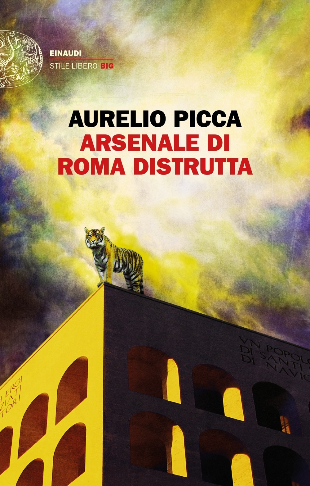

Roma è «fotogramma dell’eternità» laddove sembra emergere da un tessuto di luce e tenebre che preme sotto la sua pelle di pietra. “Arsenale di Roma distrutta” ne lascia trasparire il nome nella filigrana di storie viscerali e spietate, sgranandone le litanie in un vortice dove si rincorrono inarrestabili distruzione e rinascita, sfottò e magnificenza. «Capitale di niente» e «femmina del mondo infame», incontenibile, polimorfa e abissale, incapace di essere una cosa soltanto. Aurelio Picca carica le frasi a pallettoni e inquadra dettagli che hanno la potenza sintetica del mito. L’orologio di Wilma Montesi, decapitata sulle sponde del lago di Castel Gandolfo, a marca Zeus; nella casa del gioielliere Menegazzo, funestata dalla Banda Cimmino, un sugo gonfio di siero. Una «ciriola unta e bisunta» è la bussola che ci porta da un’Urbe troia ad un «lago gonfio di sperma». La scrittura incalza trucida in un’espressionismo oggettuale dove il Malaparte più crudo si congiunge al Leopardi più cristallino, restituendoci la città «pura e feroce» di una piazza Vittorio senza cinesi e di una Testaccio senza movida, dove i gay sono froci o pederasti, prima di Trastevere e del Pigneto, dei tossici e del sabato sera. Il limite temporale di questa ennesima Roma “sparita”, giacché una città che sorge di continuo deve anche saper tramontare, cade nel 1957, un anno dopo la nevicata ‘inventata’ da Califano per cantare di un amore stranamente innocente; questa città oggi è uno spettro che vaga fuori dalla palizzata di Cincinnato e anche da quella del Raccordo. Picca, che è di Velletri e, alla faccia dell’anagrafe, ‘decide’ di nascere proprio in quell’anno, lo stesso della morte di Malaparte, scava tra rovine e scopre arsenali in un’Urbe continuamente devastata e perennemente alla riscossa nella quale delinquenti e artisti si assomigliano nel loro modo d’essere tecnico e audace e in fondo sommamente disinteressato, privo di compiacimenti e aspettative. E la stessa letteratura risulta essere una strana rapina, che ti ruba la vita eppure ti salva.
Luce dammi luce
Quando la vidi non sapevo fosse Roma. Era domenica e nell’aria non volava un grammo di polvere. L’autobus ci lasciò sulla via Appia, a cinquanta metri da via del Quadraro. Sulla destra l’acquedotto proseguiva obliquo: un lungo treno di catrame, un pezzo di legno carbonizzato.
La luce del mattino timbrava ogni oggetto. Anche l’asfalto era una pista. Ma nessuna macchina o moto la percorreva. Il cielo, molto alto, sono sicuro che aveva abbandonato con gentilezza l’alba e andava a ricorrere il sole di giugno.
Con la tata, o serva, alla quale avevano ucciso a tradimento il marito di notte in un portone di San Lorenzo, percorrevo a piedi via del Quadraro per attraversare piazza San Giovanni Bosco e poi il viale con i palazzi - scatoloni di cartone imbandierati di bucato. Erano come pelliccia di volpe. Dalle finestre scendevano perfette decine di lenzuola bianche. Una festa di luce.
La basilica non l’avevo neppure notata. Dopo molti anni mi sarebbe apparsa come una centrale nucleare, con la cupola identica a quella di Borgo Sabotino: spettrale di notte, ambigua e ammonitrice di giorno.
Tenendo la mano alla tata venivo risucchiato alla festa sacra delle lenzuola immobili su fondo begiolino. Roma era una visione. Roma è sempre una visione quando dedica di fermarsi smemorata. Di assentarsi dal mondo. Di cancellare il suo stesso passato. Roma è la meraviglia quando emerge dal nulla. È un maschio-femmina nudo; enorme e invisibile; un remoto console che si apposta concentrato con il gladio in mano. Roma è una specie di fotogramma che cattura l’eternità.
Non girava né auto né persona. Allora eccoci a casa della figlia di Nunziata, sposata minorenne a un bravo ragazzo che in seguito diventerà ufficiale della Forestale, e che molti anni dopo, scoprendo sua moglie adultera, si getterà dal settimo piano di un palazzo dell’Alberone dove si aggiravano, sempre su Appia Nuova, per l’esattezza al bar Cavallini dei Colli Albani, quelli del clan dei Marsigliesi con Bellicini, Bergamelli e Berenguer in testa. Proprio Jacques Berenquer, rassomigliante a Franco Califano, svelto con la pistola quanto il gancio sinistro di Nino Benvenuti che fulmina RodrÍguez. Roma fu stupenda anche quando il povero uomo si lanciò nel vuoto. La città era d’oro zecchino mentre il corpo toccava il marciapiede dinanzi alla rosticceria.
Il forestale era scomposto quanto un maiale squartato mentre i polli ruotanti nel girarrosto sembravano piccoli pianeti profumati.
In quelle due stanze del Quadraro - ero così timido da tenere il mento incollato al collo - la luce non faceva sconti: pittava i muri lasciando alle ombre il minimo affinché tutto rimanere indimenticabile. In salotto giocava, con una bambolina, la nipote della figlia di Annunziata. Era alta, magra. Me ne innamorai all’istante. E con lei mi innamorai perdutamente della bambola con la quale giocava e che non mi voleva cedere in nessun modo. Pure la bambina era Roma. Pure la bamboletta lo era. Sarà per quest’incontro incantato che, da grande, sulle mie folli automobili, ho cominciato a fare accomodare accanto al posto di guida una Barbie. Adesso capisco che quella silhouette seriale, di ingenuità viziata, era la lontana parente della bambina che custodiva la Roma dei miei tre anni.
Roma ha fatto tutto quello che ha fatto il resto del mondo, ma il resto del mondo non ha fatto quello che ha fatto Roma
Roma l’ho amata quando era plebea e non miserabile. Quando gli osti erano frascatani e genzanesi come Augustarello. L’ho amata prima dei tossici, nei tempi in cui erano in venti a farsi d’eroina. L’ho amata prima del Pigneto, quando i ladri mi chiamavano «pische’» tra i mercati di via Montebello. L’ho amata quando era livida. Quando non c’era «il sabato sera». Quando era blindata nei suoi quartieri ancora in guerra con i popoli italici che la assediavano.
L’ho amata prima di Trastevere, quando si facevano i testacoda su via Nomentana. Roma era una vergine nera. Barbare. L’ho amata quando l’olimpico si beveva la luce di Monte Mario. Quando Chinagia alzava l’indice. L’ho amata quando facevo l’amore nel parcheggio di San Giovanni, quando i corpi avevano il loro odore. L’ho amata prima di Nicolini e Arbore. L’ho amata, come mi diceva Seguo Città, dall’Ottocento al ’57. Quando nessuno voleva cambiarla. Perché non era capitale di niente. Era solo la femmina del mondo infame.

Tratto da: Aurelio Picca, “Arsenale di Roma distrutta”, Einaudi 2018, pp. 5-7; 108.
•
Fotografia: Pare un pavone - Roma I° gennaio 2019.